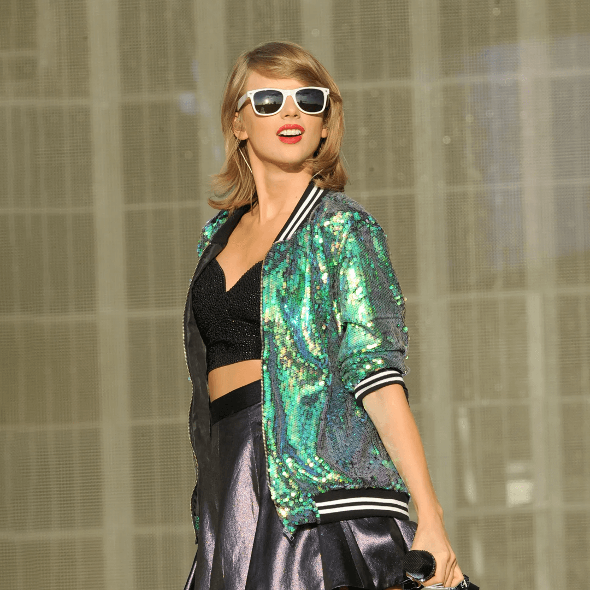

The New York Times
"Al crear música con muy pocas referencias contemporáneas, la señorita Swift apunta aún más alto, hacia una especie de atemporalidad que pocos verdaderos ídolos pop se molestan siquiera en aspirar".

Forbes
"Taylor Swift ha hecho algo que solo los Beatles hicieron un álbum en el número uno por seis semanas con cuatro álbumes consecutivas".
Bloomberg
"Taylor Swift es la industria musical".
Algunos datos
370
PREMIOS GANADOS
6
TOURS DESDE EL 2009
53
SENCILLOS DESDE EL 2006
44
VIDEOS MUSICALES